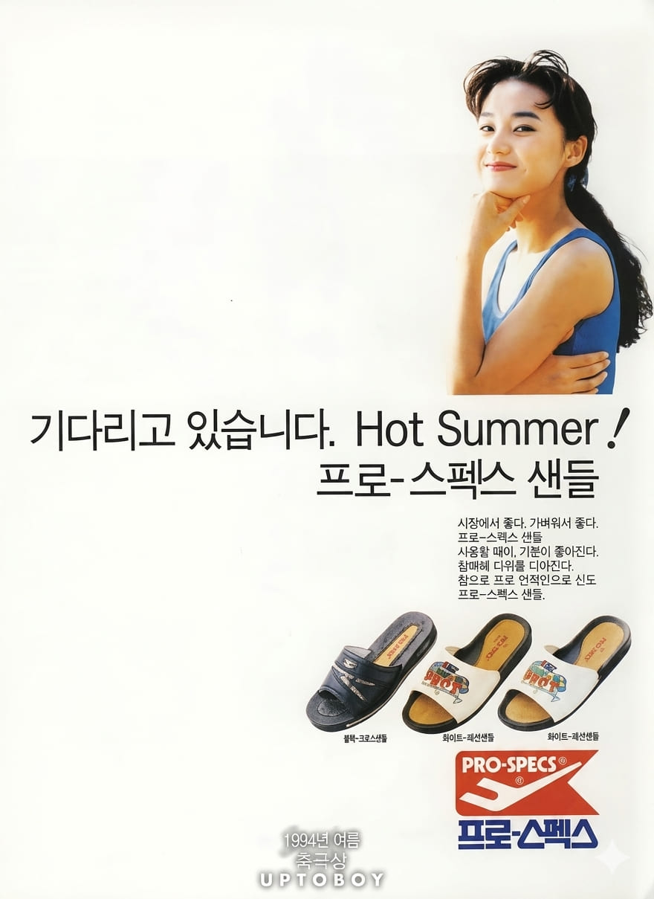
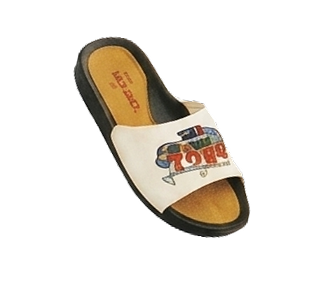

음정희
기다리고 있습니다.
Hot Summer!
프로-스펙스 샌들


기다리고 있습니다.
Hot Summer!
프로-스펙스 샌들
음정희는 1989년 MBC 19기 공채 탤런트 출신의 배우로, 1990년대 초반 청순하고 밝은 이미지로 큰 인기를 얻었다. 특히 매력적인 보조개로 인해 '보조개 여신'이라는 별명을 얻었으며, 드라마와 광고를 넘나들며 활발하게 활동했다. 당시 젊은 세대가 선호하는 스타 중 한 명으로 꼽혔다.
프로스펙스 샌들은 스포츠 브랜드 프로스펙스가 출시한 여름용 샌들 제품으로, 편안한 착용감과 활동성을 강조했다. 무더운 여름철 일상생활과 야외활동에 적합한 제품으로 젊은 소비자층을 중심으로 인기를 얻었다.
광고는 시원한 여름 분위기와 젊고 활기찬 이미지를 강조하며 제품의 경쾌한 매력을 전달했다. 음정희의 밝고 세련된 이미지가 샌들의 가벼운 느낌과 잘 어우러져 소비자들에게 긍정적인 인상을 남겼으며, 여름 시즌 광고로 많은 관심을 받았다.
1990년대 초반 광고는 젊음과 개성을 강조하는 방향으로 변화하였다. 기업들은 인기 배우와 모델을 활용해 제품의 이미지를 구축했고, 패션과 스포츠 브랜드 광고는 스타 마케팅을 적극 활용했다. 음정희 역시 당시 광고계를 대표하는 신세대 스타로 활약하며 다양한 브랜드의 이미지를 전달하는 역할을 했다.